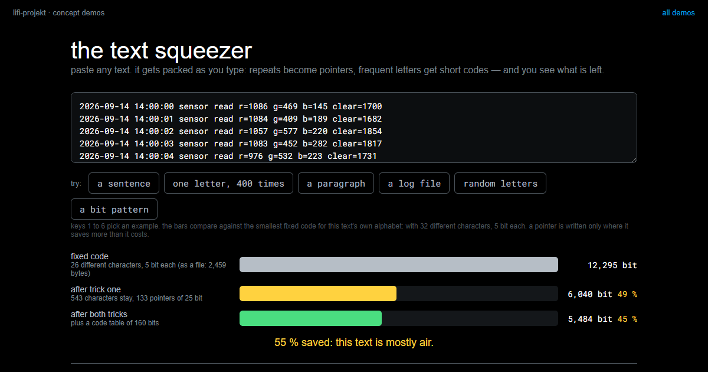
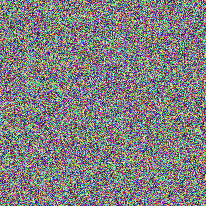
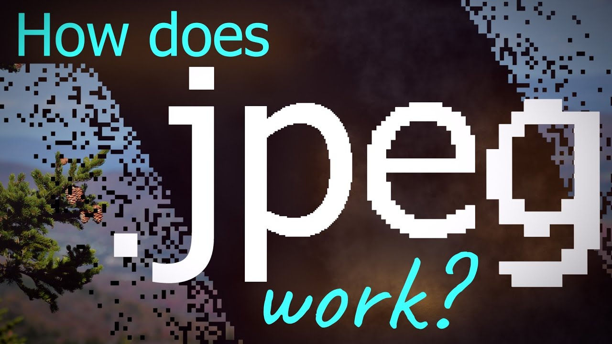

Compression
Summary
Compression represents the same information with fewer bits. The usual way of writing data gives space away: things repeat, and some symbols turn up far more often than others. The word for both is redundancy, and it is the flip side of information: information measures surprise, and the less a character surprises you, the fewer bits it deserves. A fixed code pays every character as if it were a full surprise; the difference is what a packer removes. Every packer you have ever used, ZIP included, does exactly two things about that: it says a repeated stretch once and then only points back to it, and it gives the frequent symbols the short codes. Unpack, and the same bits come back, one for one. That kind of compression has a hard limit, though, and a photo sits close to it. To get a photo into the 2 KB payload of the final you have to drop detail, and what you drop does not come back. Which of the two you may use is a question about the task, not about the tool.
In this chapter, we address the following questions:
- Why can data be made smaller without anything going missing?
- What are the two tricks inside a ZIP file, and how does each of them work?
- Why do some files barely shrink, and why does no method shrink everything?
- How does a photo get from 192 KB to 2 KB, and what is the price?
- What does the receiver have to know in order to unpack what you sent?
You need this concept for Challenge 4. It is the third of the three levers on throughput, and the one that costs the least.
Explanation
The fastest transmission is the one where you have less to send. That sounds like a trick, and the first time you pack a text file and it comes back at half the size with every character intact, it feels like one. A baling press is the honest picture: loose cardboard goes in, the same cardboard comes out on a fraction of the space, and nothing is gone but the air in between. The question is where the air sits in a file. And the second, less comfortable question is what you do once there is none left.
{kind=link}
Start with the model from Input, Processing, Output. Compression is two such boxes. A file goes into the first, pack(), and a smaller file comes out. The smaller file goes into the second, unpack(), and what comes out must be the same file, bit for bit; otherwise it was not compression but loss. Everything on this page is the question of what may happen inside the first box so that the second can still do its job. Near the end we meet boxes where only something that looks like the original comes out.
Why anything compresses at all
{kind=link}
Nothing was left out when your text file shrank. What happened is that the usual notation gives space away. “the sun” stands there three times, and a file that stores the sentence the usual way spells those seven characters out three times. That is the first kind of air, contextual redundancy: a stretch that follows from its surroundings.
The second kind has nothing to do with repetition.
{kind=link}
In English text almost every eighth letter is an e, and the z appears 180 times less often (the figures are from Lewand, Cryptological Mathematics, 2000). A fixed code, the kind you know from Code Systems, pays the same for both: eight bits for the e, eight for the z. That is wasted room too, and it is there even in a text in which not a single word repeats: alphabetic redundancy, the symbols are unevenly frequent.
Both kinds of air have one name, redundancy, and each its own: contextual and alphabetic. And redundancy is the flip side of the idea of information from Symbols and Information. Information measures surprise, and surprise is not a yes or no but a degree. A stretch you have seen before can be named instead of spelled again, and naming is cheaper: not because it was predictable, but because the name is shorter than the stretch. A frequent letter surprises you less than a rare one, so its code may be shorter and the rare one’s longer; that is probability, not certainty. A random character is a full surprise every time, so there is nothing to save, and that is the reason no packer makes everything smaller. A fixed code pays every character as if it were a full surprise; the difference is the redundancy. Compression spends bits on surprise and nothing on the rest. That is why nothing goes missing.
Trick one: point back
{kind=link}
The second “the sun” does not need writing out again. “19 characters back, 7 long” is enough of an instruction, and the third one is “18 back, 7 long”. Out of 49 characters come 35 plus two pointers, and a pointer costs about as much as two characters. That, in essence, is the first thing every packer does: it keeps the last few thousand characters in mind, and when something comes round again it writes only where it was and how long it is. Lempel and Ziv described it in 1977, and it sits inside every ZIP.
{kind=link}
ff, how far back, how long. 41 bytes.
This is what it looks like in the file, the way a hex editor shows it. Every character is one byte, 49 in all. In the packed version a pointer takes three bytes in this small format: a marker ff, so the reader knows a character is not coming next, then the number of characters back, then the length. ff 13 07 reads as 19 back, 7 long. Thirty-five characters plus two times three bytes: 41 instead of 49. On a sentence this short that is little; on a book with long repetitions it is a lot. And you can see why a pointer for two characters never pays: it costs three. A real packer spends bits instead of bytes on this and hides the marker in a flag bit, but the idea is the same.
You can try both tricks on your own text. Paste anything and watch it get packed as you type; then try one letter four hundred times, and then random letters.
the text squeezerpaste any text and watch it get packed as you type: point back to repeats, give the frequent letters short codes, and see what is left. one letter over and over squeezes to almost nothing; random letters do not squeeze at all.LiFi Project · concept demos
The simplest form of the same idea works on pictures. Walk along a row, count how many equal points come in a row, and write one byte per run: one bit for the colour, seven for the length.
{kind=link}
Not the world, but the idea carries: the larger the areas, the more it saves, and you could program this in an afternoon. Now the same method on a different picture.
{kind=link}
Eight times bigger. To your eye a chessboard is obviously a pattern; to this method it is not, because it only ever asks one question, how many equal points come next. A method only ever finds the regularity it is looking for. That is why serious packers check their own output and fall back to the raw data when they have made things worse.
Trick two: count first
Now for the second kind of air, the uneven frequencies, and two promises to keep.
{kind=link}
In Symbols and Information you saw that Morse gives the most frequent letter the shortest code, a single dot for the e, while a rare q gets four signs. It pays for that with a pause as a third symbol, because a single dot is e and two dots are i, and without the pause nobody could tell i from e e. In Code Systems you saw that codes may differ in length and can still be read without separators, as long as no code is the beginning of another. What was left open there was who gets the short codes, and why. Morse answers the who: the frequent one. The recipe that turns a count into codes is what follows, and it does without the pause.
Take a magic word, because compression feels like magic until you see the trick.
{kind=link}
abracadabra has eleven letters and five different ones: a five times, b and r twice each, c and d once. With a fixed code, as in Code Systems, every letter needs three bits, so the word needs 33. The a pays as much as the d, although it appears five times and the d once. That is where the air is.
David Huffman found the rule in 1951, as a student at MIT. His professor offered a choice between a final exam and a term paper; the paper was “find the shortest code”, and Huffman found it shortly before he was going to give up and study for the exam instead. The rule is a single sentence: take the two rarest symbols, join them into a node whose number is their sum, and repeat until one node is left.
{kind=link}
Step by step: c and d, the ones, become a 2. Then b and r, the twos, become a 4. Then 2 and 4 become a 6. Finally a and 6 become the root, 11, as many letters as the word has. What occurs often stays close to the root; what occurs rarely drifts to the bottom.
{kind=link}
The path from the root to a letter is its code: 0 at every left branch, 1 at every right one. The a hangs directly on the root and gets a single bit. The others get three. Paid out: five times one bit for the a, three each for the other six letters, 5 + 18 = 23 bits instead of 33, nearly a third less. Reading it back gives the same word letter for letter. All the saving comes from the a; the other four still cost three bits, so nothing is lost.
{kind=link}
Here is the worry from Code Systems: codes of different lengths, no separators, how does the receiver know where one letter ends? The tree answers that as a side effect. Letters sit only on leaves, so no code can be the beginning of another. Read from the left and start over at every leaf, and you never fall into the trap: 0 is complete, an a; 100 is complete, a b; 101, an r. The counterexample that went wrong in Code Systems was a = 0, b = 01, where 01 has two readings because the a would not be a leaf but a stop on the way to the b. In a Huffman tree that cannot happen.
And that is a ZIP
{kind=link}
The thing you have clicked on since school does exactly the two tricks above, one after the other: point back first, then short codes for the frequent. The pair is called Deflate, and PNG, the picture format, is the same pair with a picture in front. The five bars are real measurements, made with Python’s zipfile at level 9 on 13 September 2026. A log file of 1,200 near-identical lines shrinks to 19 per cent, because every line has almost been there before. A text to 45 per cent. The photo as raw pixels to 68 per cent, and that is about all the air a photo has. The photo as a PNG stays at 100 per cent, because it already is one. And random bytes grow, to 101 per cent. It is not the size of a file that decides how far it shrinks but its predictability.
Why could the random bytes not shrink? The reason is one of the nicest arguments of the whole semester, because it has nothing to do with technology.
{kind=link}
Suppose somebody promises a method that makes every file at least one bit smaller, losslessly. With three bits you can write eight different files. With fewer than three bits you can write seven. Put eight things into seven drawers and two of them end up in the same drawer, and then nobody can tell on unpacking which of the two was meant. No amount of computing power helps against that, because it is an argument from counting. Every lossless method makes some files smaller and others necessarily bigger. When you see a claim to the contrary, you are looking at either a misunderstanding or a sales pitch.
When redundancy runs out
Take the two extremes first, and the parrot between them. All three pictures have 256 by 256 points, 196,608 bytes raw.


On the left a picture of a single colour: total redundancy, every point follows from the first, and as a PNG it takes 569 bytes, most of them file header. On the right random noise, every point a full surprise: as a PNG it takes 197,172 bytes, more than raw, because the bookkeeping comes on top. The parrot sits between the two, but closer to the noise than to the flat colour: 93,107 bytes, a factor of two. A photo does have redundancy, neighbouring points resemble each other and PNG uses that, but far less than you would think, and that factor of two is all that lossless packing can get.
Where does the parrot’s factor of two come from? PNG does one thing before it packs, and it takes the idea from the first section literally: it predicts every point from its neighbour and keeps only the difference.
{kind=link}
In the parrot’s row the values sit close together, 251, 250, 249, 249. As differences from the left neighbour they become small numbers around zero, −1, −1, 0, +2, and the same few keep coming round: contextual redundancy between neighbouring points, and that is food for both tricks, pointing back and short codes. In the noise the differences are as large and as random as the values themselves, so the step gains nothing. PNG has several such prediction rules, some using the point above, and picks the best one for every row. The difference from JPG in one sentence: PNG stores the difference exactly, JPG rounds it away.
The picture, honestly
{kind=link}
The same parrot, written down three ways. Raw, that is 256 by 256 points times three bytes, 196,608 bytes, almost two days at ten bits per second. As a PNG, so packed losslessly, still 93,107 bytes, nearly a day: that is the factor of two from above, and a photo’s redundancy gives no more than that. As a JPG at quality 75 it is 10,587 bytes, a little over two hours, and from two metres away you see no difference. The jump from 93 to 10 kilobytes does not come from a better packer but from a different kind of method: JPG drops detail, which is to say information, not redundancy. How far you can push that is the next question.
Four real files, shown at the same size. Between the first and the second lies a factor of nine, and from two metres away you see no difference. That is what JPG does: it drops detail an eye hardly misses, fine colour differences above all, and keeps the edges in brightness. On the third you begin to see it. The fourth has half as many points per side and is under two kilobytes. It is a parrot. It is not the same parrot.
There are two roads to a smaller file, and they are the two cuts of digitising seen from the other side: fewer points, or coarser points. The fourth parrot above took both. Which mix is better depends on the picture and on the purpose, and that is your decision, not the format’s.
What the eye and the ear do not notice
{kind=link}
How does JPG get from 93 to 10 kilobytes when the redundancy is already used up? Not with a better packer, but with a model of the eye. The eye sees edges in brightness sharply but edges in colour blurred; in a feather or in gravel it sees the texture, not the single point; and it cannot tell 250 from 251. Everything that falls into those gaps JPG may round coarsely or drop, and nobody notices until you push it too far, which is when the blocks appear. MP3 does the same with a model of the ear: a loud tone masks quiet ones that play at the same time and close to it in pitch, nobody hears very high frequencies, and just after a loud sound the ear is deaf for a moment, in any pitch. Both formats keep what you would perceive and round the rest away; that is called perceptual coding. It is why they get so much further than lossless, and why there is no way back: what was rounded is not hidden, it is gone.
How JPG does that in detail, blocks of 8 by 8 points written as mixtures of cosine patterns and the fine amounts rounded to zero, is beyond this course. If you want to see it anyway, this half-hour video does it beautifully:
How are Images Compressed? [46MB ↘↘ 4.07MB] JPEG In DepthGo to http://brilliant.org/BranchEducation/ to sign up for free, and expand your knowledge. The first 200 people will get 20% off their annual premium membe...YouTube
A one-way street
That is the one difference which decides everything. With a ZIP, unpacking is the reverse of packing, bit for bit: afterwards you hold the original. With a JPG there is no reverse. What is gone is gone, and you hold something that looks like the original. The two kilobytes contain everything the receiver will ever learn about this picture; the other 91 vanished when packing, they are not hidden anywhere. Edit a photo ten times and save it as a JPG each time, and you lose ten times.
Lossy methods are not unreliable. They reliably do something else. So the question is not which method is better but what is owed. Must exactly this file arrive, as in the final, where the checksum decides? Then lossy is out. Must a presentable picture arrive? Then it is your strongest lever by a distance, stronger than any alphabet. The task decides, not the tool, and you settle that before you spend an hour optimising.
The receiver has to know the method
One last thing, and it belongs to Protocols as much as here. Packed data does not explain itself. It is a notation, and whoever does not know the notation reads nonsense, even when every single bit arrived correctly.
If your partner team’s receiver produces garbage although the transmission was clean, this is the first thing to check. Which method did you use, with which settings? That belongs in your specification, right next to the preamble and the character code. It is the same lesson as with Code Systems: the same bits, two tables, two meanings.
Slides
The slides for this concept, right here. They are the second deck of session 13; the first, on Throughput and Limits, places compression as the third of three levers.
Practice questions
Try questions in the exam format here, with the answer and its reasoning shown right away.
Further reading
- David A. Huffman: A Method for the Construction of Minimum-Redundancy Codes. Proceedings of the IRE 40 (9), 1952. https://doi.org/10.1109/JRPROC.1952.273898. Four pages, and the tree on this page is in them. Readable once you have built one yourself.
- P. Deutsch: DEFLATE Compressed Data Format Specification version 1.3. RFC 1951, 1996. https://www.rfc-editor.org/rfc/rfc1951. The exact format inside every ZIP and PNG: pointers back, then Huffman codes. Section 1.1 says in one paragraph what this page says in two.
- Charles Petzold: Code. The Hidden Language of Computer Hardware and Software. Microsoft Press, 2nd edition 2022. Chapter 8 builds Morse code from letter frequencies, which is the same idea as a packer’s: what occurs often gets a short code.
- David Salomon: Data Compression. The Complete Reference. Springer, 4th edition 2007. https://link.springer.com/book/10.1007/978-3-642-86092-8. Far more than you need, but chapter 1 states the counting argument properly and chapter 2 walks through run-length encoding and its relatives.
- The
zlibFAQ, https://www.zlib.net/zlib_faq.html, question 15: “Can zlib compress already compressed data?” A short, dry answer from the people who wrote the thing, and it says the same as this page.